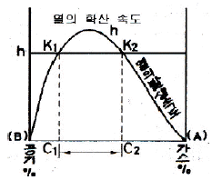
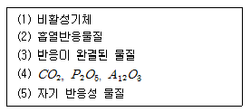
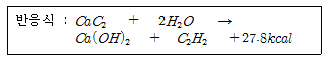

위험물산업기사 (2006-03-05 기출문제)
1과목: 일반화학
1. 다음 원소 중 제 3주기에 속하지 않는 것은?
- Si
- Se
- S
- Al
(정답률: 72%)

2. Avogadro는 기체의 종류에 관계없이 같은 온도와 같은 압력에서 무엇이 같으면 부피가 같다고 하였나?
- 무게
- 질량
- 입자수
- 밀도
(정답률: 40%)
3. 어느 전해질 5몰이 녹아있는 용액 속에서 그 중 0.2몰이 전리되었다면 그 전리도는 얼마인가?
- 0.04
- 0.02
- 0.1
- 5.0
(정답률: 50%)
4. 농도를 모르는 산의 용액 A 가 있다. 이것을 20ml 취하여 0.4N의 염기의 용액 B를 15.4ml 가하니 알칼리성으로 되었다. 다시 0.2N의 산의 용액 C를 2.8ml 넣으니 정확히 중화되었다면 최초의 산(A)의 농도(N)은 얼마인가?
- 0.28
- 1.27
- 2.47
- 4.28
(정답률: 32%)
5. 탄산음료의 마개를 따면 기포가 발생한다. 이는 어떤 법칙으로 설명이 가능한가?
- 보일의법칙
- 샤를의 법칙
- 헨리의법칙
- 르샤틀리에의 원리
(정답률: 76%)
6. 다음 중 암모니아성 질산은 (AgNO3)용액과 반응하여 거울을 만드는 것은
- CH3CH2OH
- CH3OCH3
- CH3COCH3
- CH3CHO
(정답률: 74%)
7. pH가 10.7인 용액에서의 수산이온(OH-)의 농도는 얼마인가? (단 log 2 = 0.3이다.)
- 0.01 M
- 0.003 M
- 0.00⑤ M
- 0.00007 M
(정답률: 39%)
8. 다음 중 단원자 분자는?
- 산소
- 질소
- 네온
- 염소
(정답률: 78%)
9. AgCl의 용해도는 1.12*10-5 mol/L 이다. AgCl의 용해도 적은 얼마인가?
- 1.12*10-8
- 1.25*10-8
- 1.25*10-10
- 1.45*10-10
(정답률: 44%)
10. 다음 화합물 중 파이 결합을 가지고 있는 물질은?
- CH3 - C - CH3
- CH3OH
- ZnCl2
- FeCl3
(정답률: 50%)
11. 산화에 해당되지 않는 것은?
- 산화수가 증가할 때
- 물질이 산소와 화합할 때
- 수소화합물이 수소를 잃을때
- 원자나 원자단 또는 이온이 전자를 얻을때
(정답률: 56%)
12. N2(g)+ 3H2(g) <-> 2NH3(g)이 반응계의 압력을 증가시키면 반응은 어떤 영향이 나타나는가?
- 오른쪽으로 진행
- 왼쪽으로 진행
- 무변화
- 공존
(정답률: 78%)
13. 소금에 진한 황산을 가하여 고온에서 반응시키고 발생한 기체를 수용액으로 만든다. 이 용액에다 또 이산화망간을 가하고 가열하여 생성된 기체를 상온에서 소석회에 흡수시켰다. 이때 얻어진 생성물은?
- 표백분
- 염화칼슘
- 염화수소
- 과산화망간
(정답률: 56%)
14. 용매 1kg에 녹아있는 용질의 몰 수 로 정의되는 용액의 농도는?
- 몰랄농도
- 몰농도
- 퍼센트농도
- 노르말농도
(정답률: 56%)
15. 다음 중 산화제와 환원제로 모두 사용 가능한 것은?
- KMnO4
- K2Cr2O7
- HNO3
- H2O2
(정답률: 45%)
16. 다음 주족원소들에 대한 일반적인 특징을 나열한 것 중 옳지 않은 것은?
- 금속은 열전도성과 전기전도성이 있지만, 비금속은 없다.
- 금속은 낮은 이온화에너지를 가지며, 비금속은 높은 이온화에너지를 갖는다.
- 금속의 산화물은 산성이며, 비금속의 산화물은 염기성이다.
- 금속은 낮은 전기음성도를 가지며, 비금속은 높은 전기음성도를 갖는다.
(정답률: 42%)
17. H2O가 H2S보다 비등점이 높은 이유는 무엇인가?
- 분자량이 적기 때문에
- 수소결합을 하고 있기 때문에
- 공유결합을 하고 있기 때문에
- 이온결합을 하고 있기 때문에
(정답률: 83%)
18. 알코올을 산화하면 알데히드가 생성된다. 이 때 알데히드를 얻을 수 없는 알코올은?
- CH3CH2OH
- CH3CHCH2OH
- CH3CH-OH
- CH3CH2CH2OH
(정답률: 44%)
19. 다음 중 CO와 CO2에 대한 설명 중 옳지 않은 것은?
- CO2는 공기보다 무겁고 CO는 가볍다.
- CO2와 CO는 석회수와 작용하여 탄산칼슘이 된다.
- CO2는 타지 않으나 CO는 타서 파란색 불꽃을 낸다.
- CO2는 빵을 부풀게 하는데 쓰며 CO는 금속 산화물을 환원하는데 쓴다.
(정답률: 39%)
20. 다음 중 기하 이성질체가 있는 화합물은?
- CH3CH=CH2
- CH2=CH2
- CH3CH2CH=CHCH2CH3
- CH3OH
(정답률: 47%)
2과목: 화재예방과 소화방법
21. 마른 모래의 보관방법으로 옳지 않은 것은?
- 반드시 건조되어 있을 것
- 가연물이 약간 함유되어 있을 것
- 포대 또는 반절 드럼에 넣어 보관할 것
- 부속기구로 삽, 양동이를 비치할 것
(정답률: 85%)
22. 하론 2402를 소화약제로 사용하는 이동식 할로겐화물 소화설비는 20도의 온도에서 하나의 노즐마다 분당 방사되는 소화약제의 양[Kg]은 얼마 이상으로 하여야 하는가?
- 5
- 35
- 45
- 50
(정답률: 65%)
23. 화학포에 사용되는 기포안정제가 아닌것은?
- 탄산수소나트륨
- 단백질 분해물
- 계면활성제
- 사포닝
(정답률: 50%)
24. 그림에서 C1과 C2 사이를 무엇이라고 하는가?

- 폭발범위
- 발열량
- 흡열량
- 안전범위
(정답률: 60%)
25. 알콜 화재 시 일반적인 포소화제는 효과가 없다. 그 이유는?
- 유독가스가 발생하므로
- 화염의 온도가 높으므로
- 알코올을 포와 반응하여 가연성 가스를 발생하므로
- 알콜은 소포성을 가지므로
(정답률: 70%)
26. 다음 중 가연물에 될 수 없는 물질로 짝지어진 것은?

- 1,2,5
- 1,2,3,4
- 2,3,4
- 3,4,5
(정답률: 50%)
27. 수소화나트륨이 주수소화가 부적당한 가장 큰 이유는?
- 발열반응
- 수화반응
- 중화반응
- 중합반응
(정답률: 63%)
28. 다음 중 가연성 물질이 아닌 것은?
- 사염화탄소
- 산화에틸렌
- 이황화탄소
- 벤젠
(정답률: 49%)
29. 제 1류 위험물 화재의 소화방법에 대한 설명으로 가장 옳은 것은?
- 무기과산화물류 외에는 냉각소화가 유효하다.
- 무기과산화물류의 경우에는 건조분말 소화약제에 의한 질식소화는 효과가 없다.
- 주위 가연물의 소화보다 위험물의 직접 소화에 주력하는 것이 효과적이다.
- 제1류 위험물은 불연성이기 때문에 연소시 안전거리를 확보하거나 무인 방수포를 이용할 필요는없다.
(정답률: 43%)
30. 분말 소화약제의 착색되는 색깔이 바르게 짝 지어진 것은?
- 중탄산나트륨 - 회백색
- 염화바륨 - 백색
- 인산암모늄 - 담홍색
- 중탄산칼륨, 탄산수소칼륨 - 청색
(정답률: 83%)
31. 트리에틸알루미늄의 소화제로서 가장 적당한 것은?
- 마른모래, 팽창질석
- 물, 수성막포
- 할로겐화물, 단백포
- 이산화탄소, 강화액
(정답률: 78%)
32. 포헤드 방식의 포헤드는 방호대상물의 표면적(m2)얼마 당 1개 이상의 헤드를 설치하여야 하는가.
- 3
- 6
- 9
- 12
(정답률: 69%)
33. 물 분무설비에 있어서 분무에 의한 유류의 표면에 얇은 수성막을 형성하여 유면을 덮는 작용을 무엇이라 하는가?
- 희석작용
- 질식작용
- 유화작용
- 융해작용
(정답률: 43%)
34. 저장소 건축물의 외벽이 내화구조인 것은 연면적 얼마를 1 소요단위로 하는가?
- 50 (m2)
- 75 (m2)
- 100 (m2)
- 150 (m2)
(정답률: 72%)
35. 다음에서 연소할 수 있는 조건을 모두 갖춘 것은?
- 성냥불, 등유, 산소
- 등유, 수소, 공기
- 아세톤, 수소, 산소
- 알코올, 황, 산소
(정답률: 69%)
36. 다음 중 산 알칼리 소화기의 약제는
- 탄산수소 나트륨, 탄산수소 칼륨
- 탄산수소나트륨, 황산알루미늄
- 탄산수소나트륨, 황산
- 탄산수소칼륨, 인산암모늄
(정답률: 18%)
37. 전역방출방식의 할로겐 화합물 소화설비의 분사헤드에서 하론 1211을 방사하는 경우의 방사압력은 얼마이상으로 하여야 하는가?
- 0.1 MPa
- 0.2 MPa
- 0.5 MPa
- 0.9 MPa
(정답률: 57%)
38. 옥내 소화전 설비를 설치함에 있어 큐비클식 비상전원전용 수전설비는 당해 수전설비의 전면에 폭 얼마 이상의 공지를 보유하여야 하는가?
- 0.5m
- 1m
- 1.5m
- 2m
(정답률: 38%)
39. 지정수량의 10배 이상의 위험물을 저장, 취급하는 제조소 등에 설치하여야 할 설비에 해당되지 않는 것은?
- 확성장치
- 비상방송설비
- 자동화재탐지설비
- 무선통신설비
(정답률: 64%)
40. 제 4류 위험물에 대한 가장 적절한 소화 방법은?
- 질식소화
- 제거소화
- 냉각소화
- 억제소화
(정답률: 69%)
3과목: 위험물의 성질과 취급
41. 염소산염류의 성질이 아닌 것은?
- 환원력이 강하다.
- 대부분 백색의 가용성염이다.
- 강산과 혼합하면 폭발의 위험성이 있다.
- 상온에서는 안전하나 열에 의해 분해하여 산소를 발생한다.
(정답률: 60%)
42. 제조소등에서 위험물을 저장 및 취급할 경우 기준으로 적합하지 않은 것은?
- 위험물을 용기에 다시 채워 놓는 경우에는 방화상 안전한 장소에서 하여야 한다.
- 추출 공정에 있어서는 추출관의 내부 압력이 이상 상승하지 않도록 하여야 한다.
- 열처리 작업은 위험물이 위험한 온도에 달하지 않도록 하여야 한다.
- 유분리 장치에 고인 기름은 유분리 장치의 배수구로 용이하게 흘러 나가도록 조치하여야 한다.
(정답률: 67%)
43. 제 5류 위험물을 취급할 때 주의해야 할 사항 중에서 틀린 것은?
- 마찰, 충격을 피할 것
- 화기의 접근을 피할 것
- 운반용기의 외부에 '자연발화주의' 라고 표기한다.
- 분해를 촉진시키는 약품을 접촉시키지 않을 것
(정답률: 67%)
44. 위험물의 류별로 그 위험성의 종류가 바르게 연결되지 아니한 것은
- 제1류 위험물 - 산화성고체
- 제3류 위험물 - 가연성고체
- 제4류 위험물 - 인화성 액체
- 제5류 위험물 - 자기반응성 물질
(정답률: 68%)
45. 물과 반응하여 독성이 강한 기체를 발생하는 화합물은?
- K
- P4
- CS2
- Ca3P2
(정답률: 54%)
46. 제 1류 위험물의 취급 방법으로서 잘못된 사항은?
- 환기가 잘되는 찬 곳에 저장한다.
- 가열, 충격, 마찰 등의 요인을 피한다.
- 가연물과 접촉은 피해야 하나 습기는 관계없다.
- 화재 위험이 있는 장소에서 떨어진 곳에 저장한다.
(정답률: 81%)
47. 삼산화크롬(CrO3)의 성상에 관한 설명 중 옳은 것은?
- 황색의 침상결정이다.
- 물, 에테르, 황산에 녹지 않는다.
- 지정수량은 300kg이고 ,강력한 산화제이다.
- 융점이상으로 가열하면 200~250도에서 오존을 방출하고 암적색의 크롬산화물로 변한다.
(정답률: 46%)
48. 과망간산 칼륨의 성질로서 잘못된 것은?
- 흑자색의 주상결정이다.
- 알코올류과 접촉시켜두면 위험하다.
- 황산을 가하면 격렬하게 튀는 듯이 폭팔한다.
- 물에 잘 녹고 수용액은 강한 환원제이다.
(정답률: 63%)
49. 공기 중 방치하면 자연발화가 일어나므로 주로 물을 넣은 금속 용기에 저장하는 물질은?
- Na
- K
- Mg
- P4
(정답률: 76%)
50. 제 3류 위험물인 탄화칼슘 320g이 물과 전량 반응하여 아세틸렌을 발생할 때 열량은 몇 KCal 인가? (단, Ca의 원자량 : 40, C 원자량 12)

- 260
- 170
- 139
- 27.8
(정답률: 42%)
51. 트리니트로페놀(Trinitro Phenol)의 성질로 틀린 것은?
- 저장시 폭발에 대비하여 철이나, 구리로 만든 용기에 저장한다.
- 순수한 것은 무색이지만 보통 공업용은 휘황색의 침상 결정이다.
- 물에 전리하여 강한 산이 되며, 이때 선명한 황색이 된다.
- 단독으로는 충격, 마찰에 둔감하고 안정한 편이다.
(정답률: 69%)
52. 동 식물유류에 관한 설명 중 틀린 것은?
- 요오드 값이 클수록 자연발화의 위험이 크다.
- 요오드값 130 이상인 것을 건성유라 한다.
- 동식물유는 연소위험성 측면에서는 제 2석유류와 유사하다.
- 아마인유는 건성유이므로 자연발화의 위험이 있다.
(정답률: 61%)
53. 과산화나트륨의 저장 취급방법이 틀린 것은?
- 가연물, 물, 습기의 접촉을 피한다.
- 용기는 수분이 들어가지 않게 밀전 및 밀봉 저장.
- 가열, 충격, 마찰을 피하고 유기물질의 혼입을 막는다.
- 흡습성이 크므로 직사광선을 받는 곳이나 건조한 것에 저장한다.
(정답률: 62%)
54. 이황화탄소의 옥외저장탱크는 벽 및 바닥의 두께가 (A) 이상이고, 누수가 되지 않는 철근콘크리트의 (B) 속에설치하여야 한다. ( ) 안에 알맞은 것은?
- 0.2 m : 수조
- 3.2mm : 수조
- 3.2mm : 땅속
- 0.2m : 땅속
(정답률: 53%)
55. 벤젠에 진한 질산과 진한 황산의 혼산을 반응시켜 얻어지는 화합물은?
- 피크린산
- 아닐린
- T.N.T.
- 니트로벤젠
(정답률: 58%)
56. 위험물의 운반에 관한 기준에서 "위험물"이란 표지판의 바탕색과 글자색으로 옳은 것은?
- 바탕색 : 흑색 , 글자색 : 황색
- 황색 , 흑색
- 빨간색 , 백색
- 백색, 발간색
(정답률: 57%)
57. 다음 제 4류 위험물 중 제 1석유류에 속하는 것은?
- 벤젠
- 아세트알데히드
- 크레오소트유
- 클로로벤젠
(정답률: 59%)
58. 다음 위험물 중 톨루엔에 질산, 황산을 반응시켜 생성되는 물질로서 니트로글리세린과 달리 장기간 저장해도 자연분해 할 위험 없이 안전한 것은 무엇인가?
- C6H2(NO2)3OH
- C3H5(ONO2)3
- C6H2CH3(NO2)3
- C6H3(NO2)3
(정답률: 42%)
59. 아세톤의 일반 성질에 관한 설명이다. 틀린 것은?
- 물에 잘 녹는다.
- 일광에 쪼이면 환원중합된다.
- 요오드포름 반응을 일으킨다.
- 아세틸렌을 녹이므로 아세틸렌 저장에 이용된다.
(정답률: 32%)
60. 황화린의 성상에 대한 설명이 옳은 것은?
- P4S3(상황화린)은 암적색의 분말로 자연 발화성이 있으므로 습가 가열방지, 산화제의 접촉을 피한다.
- P4S3의 연소생성물은 P2O5와 H3PO4이다.
- P4S7(칠황화린)은 조해성이 있고, 더운물에 분해하여 H2S가 발생한다.
- P2S5(오황화린)은 공기 중 약 100도 에서 발화하고 냉수에 급격히 분해하여 SO3 가스가 발생한다.
(정답률: 53%)
제 3주기 원소는 11번 원소 나트륨(Na)부터 18번 원소 아르곤(Ar)까지이며, 이들은 전자 구성이 2, 8, 8 또는 1, 2, 3, 4, 5, 6, 7, 8 전자를 가지고 있습니다.
"Si"는 14번 원소로 제 3주기 원소입니다.
"Se"는 34번 원소로 제 4주기 원소입니다.
"S"는 16번 원소로 제 3주기 원소입니다.
"Al"은 13번 원소로 제 3주기 원소입니다.
따라서, "Al"은 제 3주기 원소이지만, 나머지 원소들은 제 3주기 원소가 아닙니다.